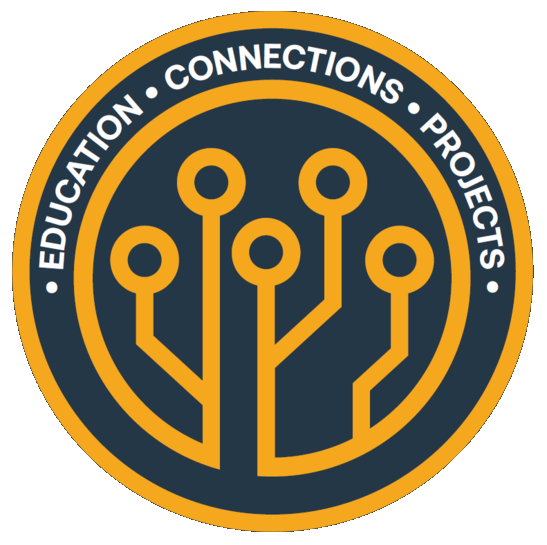

Welcome to IPC Student Chapter at UC Irvine!!!

We Are a Non-Profit Organization who connects current students at UCI to mentors at Distinguished Companies such as Bose, Panasonic, and to lots of Startup Companies. Our Meetings are Usually Held Once A Month.

There are a lot of benefits in building your resume, earning scholarships, and earning Technical Edu Certificates to kickstart your career. Each Academic Quarter, We Host One Technical Workshop, One Company Event, and Building an Electronics Kit/Holding a IPC Competition for Our Members.

Join the IPC Club Today!